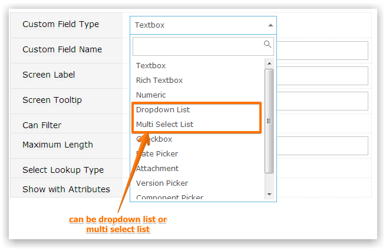
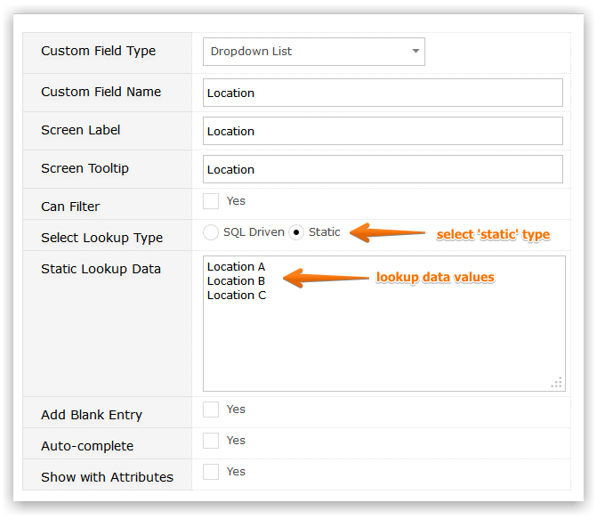

If your Custom Field is a Dropdown List or Multi-Select List and you select the Static option then you will be presented with a text area, labelled 'Static Lookup Data' in which you may enter the values that you wish to present to users when they select that field.

Separate values with 'CR'. Gemini automatically strips blank lines from this list so you should always specify a value to represent a null, such as 'N/A' or 'Empty' if it is valid for users not to have to populate this field.
